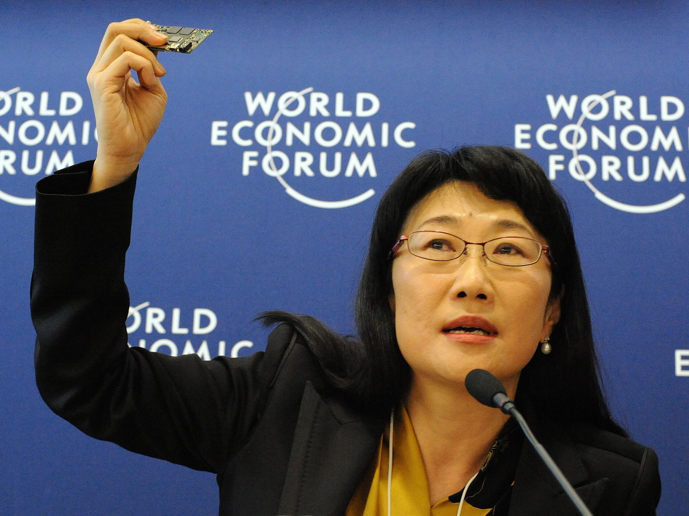

As additional reading tasks, students can find out more about the following entrepreneurs to consolidate this section of the syllabus.
Cher Wang

Introduction
Cher Wang (born 1958) is co-founder of Taiwanese smartphone maker High Tech Computer (better known as HTC) with her husband Wen-Chi Chen in 1997. Despite coming from a wealthy background, Wang is credited as being one of the world’s richest self-made billionaires. She is chairwoman of HTC with an estimated wealth of $8.8 billion according Forbes Rich List.
Personal life
Cher Wang (birth name Hsiueh-Hong Wang) was born on 14 September 1958 in Taipei, Taiwan. She was one of seven children raised by mother Wang Yang-Jiao, her father’s second wife (altogether her father had nine children by three wives). Cher Wang is married with two sons.
Wang is the fourth of five children. Her mother had two sons and three daughters. Cher Wang describes her mother as the person she looked up to most, who as a young child had worked as a maid and on a farm to support her family. In 1946, she wed Cher’s father at the age of 21. When her father remarried, her mother took Cher and her brother Walter (the youngest two of her children) to the USA where they were raised.
Her father, Yung-Ching Wang (1919-2008), was one of the richest people in Taiwan. Despite only being able to complete elementary school education, he went on to co-found Formosa Plastics in 1954 with his brother, Yung-Tsai Wang. Today, it is one of the Taiwan’s largest gasoline suppliers and amongst the largest petrochemical producers in Asia. Cher Wang and two of her cousins (sons of Yung-Tsai Wang) are key stakeholders in the company.
Despite the family’s wealth, Cher Wang did not grow up living a life of extravagance. Her parents were strict in their upbringing. As a young girl, her father took her on monthly visits to a local hospital (which he had helped to finance). Leisure time was spent playing basketball and tennis. It was also her father’s decision that Cher Wang and her siblings all studied abroad – to gain a broader life experience – rather than studying in Taipei. In 1974, Cher Wang attended the elite College Preparatory School in Oakland, California (ranked as one of the top private schools in the USA). Although she wanted to study music (as she originally wanted to be a pianist), she was also a realist and switched to reading Economics after just three weeks.
Cher Wang gained her master’s degree in Economics at the highly prestigious University of California, Berkeley, USA in 1981. A year later, she took a job at First International Computer (FIC), a company run by her elder sister that sold motherboards. Wang progressed to taking charge of the personal computer division of FIC.
Cher Wang is a devoted Christian and says that her business vision and hard work ethic are inspired from the Bible. Her upbringing has hugely influenced her outlook in life and in business. For example, she is reported to have celebrated her 50th birthday by staying at home and eating strawberry ice cream cake with her family. Despite her billionaire status, she avoids travelling by private jet from her office in Taipei to Silicon Valley, where she meets Microsoft executives on an annual basis.
Cher Wang’s husband, Wen-Chi Chen, is the President and Chief Executive Officer of VIA Technologies. The company is a developer of silicon chip technology.
HTC – the beginnings
Taiwan is well-known for bringing the notebook computer to the mass market, with market leaders such as ASUS. HTC started out by manufacturing notebook computers too. In 2000, HTC secured a contract to make the iPAQ handheld PDA handheld computers for Compaq.
Although HTC had established itself in making notebook computers since 1997, the forces of change in the business environment meant that Wang and Chen were faced with a choice of either to focus on notebooks or diversify to hand-held devices due to market research data that suggested this to be a huge growth market. Cher Wang decided to move the company into to cellphones, despite the presence of well-established competitors. It proved to be the right move, with HTC’s sales revenue increasing by 29 percent and its share price rising by around 150 per cent within a year. Wang took on responsibility to build relationships with clients, such as T-Mobile. She spent much of her time in Silicon Valley, which proved critical in obtaining the rights to make the first Android-supported phone with T-Mobile.
Wang is a self-driven entrepreneur who did not rely on the riches of her wealthy family background to be a success in the business world. Until recently, she had a very low profile despite running a multi-billion dollar company. She does not like to be the centre of attention but being the boss of such as large and important company, the attention (via the mass media) was inevitable. Quite fittingly then, Wang’s company slogan is “Quietly Brilliant”, which also provides some insight into it corporate culture.
Leading HTC today
HTC Corporation manufactures one out of every six smartphones sold in the USA, where about half its global revenues come from. It also supplies customized smartphones for mobile phone giant Vodafone and makes the Nexus One smartphone for Google. HTC smartphones use both the Microsoft Windows Mobile system and Google’s Android platform. HTC’s client list also includes other large American and European telecom operators such as AT&T Wireless, Verizon and T-Mobile.
HTC is not only a manufacturer but heavily engaged in product research and development. In addition, HTC places great emphasis on brand marketing by customizing smartphones to its clients, such as Vodafone, and providing technical and after-sales support for all of its products.
HTC’s presence in the global market has strengthened following its partnership with well-known heavyweights such as Google and Facebook. HTC made major headlines by launching Google’s first Android mobile phones, and Facebook-ready handsets.
Through its partnership with Microsoft, HTC was the first manufacturer to market smartphones with the Microsoft Mobile operating system which attracted early adaptors who paid premium prices for such exclusivity. HTC has also made a mark in the computer tablet market, a high-growth sector of the consumer electronics industry.
Being the figurehead of HTC also takes Wang beyond the borders of her thriving business. In September 2011, Wang represented Taiwan’s industrial sector and led a keynote at the Women and Economic Summit (WES) in San Francisco (also attended and hosted by U.S. Secretary of State, Hilary Clinton). In 2011, Wang also donated 28.1 million to set up a not-for-profit college in Guizhou, China, providing three years of free or low-cost education to students from low-income families. Cher Wang has also made significant donations to the University of California, Berkeley, USA. To this date, she remains heavily involved in philanthropy and charity work.
Conclusions
Innovation is at the heart of what HTC does. Long before Apple’s iPhone made a presence in the market, HTC was establishing its market share in the smartphone market. Wang realized that people did not want to carry around so many devices (such as a personal data assistant (PDA), portable music player, telephone and camera). It was HTC’s ability to cram these devices into one smartphone and to create the software to allow them to work together that gave the company a distinctive selling point over more established rivals such as Nokia and Sony-Ericsson. Perhaps the largest weakness facing HTC is its limited product portfolio. In such as fast-paced industry, cash cows such as HTC smartphones can quite quickly become dogs. Nevertheless, HTC’s business strategy has proved a success as it focuses on brand value through easy-to-use innovative products. The strategy is in line with Cher Wang’s business mantra: “Don’t do what others are already doing.” Perhaps it is not too surprising then that in late 2011 the quietly brilliant Cher Wang was ranked 20th on Forbes list of the world’s 100 most powerful women.
Jack Ma - Founder of Alibaba.com
Introduction
Jack Ma is a self-made billionaire, with a net worth of $40.6 billion (May 2020). He is the founder and former chairman of Alibaba Group, which owns the likes of Alibaba.com (the world’s largest Business to Business e-commerce business) and Taobao.com (the world’s largest Consumer to Consumer e-commerce business). Almost everything and anything made in China can be traded globally on Alibaba.com and Taobao.
Jack Ma started the internet company with initial capital of just $60,000 and went on to become China’s richest man in less than 15 years. In September 2014, the company rewrote history by floating its shares on the New York Stock Exchange, raising a world record $25 billion.
The early years
Jack Ma was born in Hangzhou, Eastern China on 10th September 1964. He has an older brother and younger sister. Jack Ma was brought up during the Chinese Cultural Revolution, a period of total government control of the country.
From a young age, Jack Ma has been fascinated by martial arts. His stubbornness and rebellious nature got him into a lot of trouble (and fights) at school. He is also a fanatic of Chinese martial arts novelist Jin Yong, an idol and close friend. Jack Ma makes the analogy between a good Kung Fu master and entrepreneur: “you have to suffer a lot, you have to practice, you have to learn, you have to have the spirit of never giving up, the fighting spirit.” To this day, Jack Ma still reads Jin Yong’s books as a way to relax, joking “because I learn from Kung Fu books. You can never learn from Harvard Business School!”
In the late 1970s, Jack Ma worked as a voluntary tour guide to English-speaking tourists in Hangzhou, about 110 miles from Shanghai. He would start work at 5am at Hangzhou’s only hotel, meeting foreign tourists and business travellers from the USA and Europe. For nine years, he offered free tours of the West Lake in the city. This allowed him to practise his English and to develop his entrepreneurial instincts. Learning English also gave Jack Ma an alternative perspective of the world during China’s Cultural Revolution.
Although Jack Ma failed the university entrance exam on two occasions, his perseverance meant he graduated in 1988 with a bachelor’s degree in English from Hangzhou Teachers College. He started his career as a lecturer of English and International Trade at the Hangzhou Dianzi University. 1988 was also the year that Jack Ma was introduced to Jerry Yang, co-founder of Yahoo! (who later injected $1 billion into the Alibaba Group). A born entrepreneur, Jack Ma soon founded his own translation agency, working with some of the first American companies doing business in China.
In 1995, Jack Ma travelled to Seattle, his first visit to the USA, where he came across the Internet – literally non-existent in China at that time. He was particularly keen in building websites to help small businesses. As a budding entrepreneur, he founded China Pages (similar to Yellow Pages) in 1995, dubbed by many as China’s first web-based business, with $2,000 which he borrowed from his parents and brother-in-law, but the business flopped.
The founding of an e-commerce revolution
Jack Ma went to Silicon Valley in 1999 looking for venture capitalists for the Alibaba Group. However, he was rejected by every financier he saw. Still, with his fighting spirit, Jack Ma founded Alibaba.com in 1999 with just $60,000 and went on to become the world’s largest business-to-business (B2B) marketplace, serving more than 300 million members (small and medium sized businesses) from some 240 countries. Box 1 outlines the story behind the Alibaba brand name.
Many doubted Jack Ma’s B2B business model because China was not ready for e-commerce, especially with the emphasis on helping small businesses rather than catering for multinational companies (the model used in Europe and the USA). However, within ten years, Alibaba.com had 58 million small businesses using their B2B platform to sell products to overseas customers. Jack Ma says his thinking was simple – he believed that China needed an e-commerce platform despite people saying that he had no chance competing against eBay, especially with the poor logistics and credit system in China. His response to the pessimists was pointing to an obvious fact – that the USA had a population of 300 million compared to China’s 1.3 billion so it was a matter of time before China had more Internet users (which occurred in early 2008 when China had more Internet users than any other country).
Box 1 – Behind the brand name
Jack Ma came up with the Alibaba name when he was in a coffee shop in San Francisco. The name appealed to him as Alibaba and the associated catchphrase ‘Open Sesame’ would provide huge opportunities for small to medium sized business from around the world. In his words, “Alibaba is not a thief. Alibaba is a kind, smart business person, and he helped the village”. The name is also easy to spell, and known globally. Jack Ma, with his wicked sense of humour also registered AliMama, (baba is Chinese for ‘father’) with the intention of using AliMama.com for the C2C division of the business, joking that Baba does the business deals whilst Mama does the (online) shopping.
Box 2 – Jack Ma’s accomplishments
2000 - appears on the cover of Forbes magazine, the first mainland Chinese person to do so.
2001 - voted by the World Economic Forum as a “Young Global Leader”.
2001 - becomes world’s first e-business to exceed one million members.
2004 - Alibaba.com voted by China Central Television (China’s main television network) and its viewers as one of the “Top 10 Business Leaders of the Year”.
2005 - named as one of the “25 Most Powerful Businesspeople in Asia” by Fortune.
2007 - named as a “Businessperson of the Year” by Businessweek.
2008 - honoured as one of the 30 “World’s Best CEOs” by Barron’s (US premier financial magazine).
2009 - selected by Time magazine as one the world’s 100 most influential people.
2009 - named as one of the “Top 10 Most Respected Entrepreneurs in China” by Forbes China.
2009 - received the award for “CCTV Economic Person of the Year: Business Leaders of the Decade Award”.
2010 - named as one of “Asia’s Heroes of Philanthropy” by Forbes Asia.
2013 - steps down as CEO, but remains as Chairman and the face of the company.
2014 - Alibaba.com floats on New York Stock Exchange, cementing Jack Ma’s status as China’s richest man
Speaking to The Wall Street Journal back in October 2011, Jack Ma said success relies on going back to basics -“think about how can you help people and create value for the others and then you'll get the money. This is how we succeed in China.”
Conclusions
From humble beginnings, Jack Ma focused on satisfying the needs of customers in order to “influence the world and improve the country.” Few people would argue that Jack Ma has failed to achieve this, even though China remains a difficult place for foreign firms to do business.
Jack Ma remembers his roots as an English teacher, saying” I was a teacher for 6 years. I love to teach, I love to go back to school and share my experiences with young people.” Like dedicated students of martial arts or the IB, successful entrepreneurs never stop learning.
James Dyson - Founder of Dyson
Sir James Dyson - Quick facts and figures about one of the UK's richest people*
"Ours is a life of risk and of failure. Life isn't easy." - Sir James Dyson
Sir James Dyson topped the Sunday Times Rich List for the first time in May 2020, with his wealth valued at £16.2 billion (around $21.1 billion)*
Born on 2nd May 1947 in Norfolk, UK
After his vacuum cleaner invention was rejected by major manufacturers, Dyson set up his own manufacturing company, Dyson Ltd. in 1991
James Dyson made his fortune with the innovative invention of the bag-less vacuum cleaner which went on sale in 1993, and is best known as the inventor of the Dual Cyclone bag-less vacuum cleaner
Studied art before his art college principal suggested he go into design - and the rest is history, as they say
As with all successful entrepreneurs, risk-management is a key skill to master - at one stage, James Dyson owed his bank nearly £1m ($1.3bn) as it took him more than 10 years to develop the company's flagship product, Britain's best-selling vacuum cleaner
Not all his ideas and inventions have succeeded - he had plans to build electric cars but these were scrapped despite costing £500m ($650m) of his own money
In 2007, Dyson talked about the importance of failure in life: "I made 5,127 prototypes of my vacuum before I got it right. There were 5,126 failures. But I learned from each one. That's how I came up with a solution. So I don't mind failure. I've always thought that schoolchildren should be marked by the number of failures they've had. The child who tries strange things and experiences lots of failures to get there is probably more creative."
Most Dyson products are designed in the UK but manufactured in Asia
Following confirmation of the UK's departure of the European Union in January 2020, Dyson relocated his business headquarters to Singapore
Sir James Dyson's father was a teacher - at the school that he and his brother attended as young boys. His wife is also a teacher.
* Interestingly, The Queen came in at 372 place with an estimated worth of £350m (around $483.6m).
Steve Jobs - Co-founder of Apple
Steve Jobs (1955 - 2011)
Following his death in October 2011, aged just 56, Steve Jobs was acknowledged by political and business leaders as an iconic entrepreneur who helped to transform the daily habits of millions of people across the globe. Steve Jobs will go down in history for being the visionary who reinvented computing, music and mobile phones during what he called the ‘post-PC era’. This short piece outlines the life, failures and successes of Steve Jobs, a man who truly loved what he did.
Steve Jobs – the man
Unlike many other billionaires, Steve Jobs was not born into a rich family. Before Steve Jobs was born, his biological mother’s unfortunate circumstances meant that he was already set for adoption. His biological parents (Joanne Carole Schieble and Abdulfattah Jandali, a Syrian immigrant) were unmarried undergraduate students at the University of Wisconsin. Born in San Francisco, Steve Jobs was adopted by Paul and Clara Jobs, a working-class couple from Armenia (near Turkey and Azerbaijan).
It wasn’t easy for Jobs, who spent much time at university sleeping on the floor in his friends’ rooms and collected used Coca-Cola bottles for $0.05. In his infamous commencement speech at Stanford University, California in 2005, Jobs told the students that he would walk 7 miles across town on Sunday nights to get a good meal, once a week.
Jobs did not graduate from university because his parents could hardly afford the tuition fees at Reed College, Oregon USA and Jobs had no idea at the time what he wanted to do as a career. Jobs took the risk of dropping out of university and whilst he described the decision as being daunting, he never looked back.
After starting computer animation film studio, Pixar, Steve Jobs met Laurene Powell, who was at the time a business undergraduate at Stanford University. They married in 1991 in a Buddhist ceremony and had three children together (Eve, Erin and Reed). He also has another child, Lisa Brennan-Jobs, from a former relationship with Harvard graduate and journalist Chrisann Brennan (who was also his high school sweetheart). Jobs also has two sisters, Patti Jobs (his adoptive sister, also adopted by Clara and Paul Jobs) and Mona Simpson (his biological sister, who he described in 1997 as “one of my best friends in the world”).
Wealth and Health
Forbes magazine estimated the wealth of Steve Jobs to be over $8.3 billion. The Mail Online reported that Jobs drove a 2007 Mercedes Benz SL55 AMG, which he had bought new for around $130,000. He lived in a 1930s Tudor-style 5,700 square foot home with seven bedrooms and four bathrooms, estimated to be worth $2.6million according to CNBC. Little is reported about his philanthropy activities, but the New York Times did say that Jobs gave $150 million to a cancer centre at the University of California, San Francisco USA.
Despite his wealth and his aspirations to take on the likes of Android, Steve Jobs was diagnosed with a rare form of pancreatic cancer in 2003 and had a liver transplant in 2008. Struggling with severe illness for such a long time, Steve Jobs eventually resigned as the chief executive officer of Apple in August 2011.
On the day of his death, China’s most popular microblog site, Sina Weibo, reported that 35 million people had posted comments about the death of Steve Jobs. According to internet monitoring agency SR7, there were around 10,000 tweets per second about the death of Steve Jobs (Michael Jackson’s death recorded 493 tweets per second).
Box 1 – Steve Jobs' Milestones
1955 - Born 24th February.
1976 - Steve Jobs sets up Apple Computer with two friends on 1st April 1976.
1979 - Steve Jobs has an estimated wealth of $7 million.
1980 - Apple floats on the NASDAQ stock exchange at $22 per share; Jobs is estimated to be worth over $200 million.
1984 - Apple launches the Macintosh personal computer.
1985 - Steve Jobs is fired by Apple; he sets up NeXT.
1986 - Jobs buys Pixar for $10 million.
1995 - Pixar floats on the stock exchange; Jobs is worth $1.5bn.
1996 - Apple buys NeXT from Steve Jobs (he returns to Apple).
1998 - Apple launches the iMac.
2001 - Steve Jobs launches the iPod.
2007 - Jobs launches the iPhone.
2010 - Jobs launches the iPad.
2010 - Apple is valued at over $221 billion, overtaking Microsoft based on market capitalization on May 26 (Microsoft was valued at $219 billion).
2011 - On August 9th, Apple becomes highest valued company on the planet with each share worth $364 (over 13,300% growth since its initial public offer back in 1980).
2011 - Jobs passes away on 5th October. He has an estimated wealth of $8.3 billion at the time.
Apple – the early years
It was during his time at Homestead High School in California, where a 16 year old Steve Jobs met Steve Wozniak, a 21-year old technical wizard. The two became friends and later collaborated to form Apple Computer.
Jobs had worked as a technician at pioneer arcade games maker Atari whilst Wozniak had an engineering job. However, in April 1976, the two co-founded Apple Computer in Jobs’ parents’ garage in Silicon Valley. Jobs, aged just 20, had sold his Volkswagen van to fund the venture. They produced a circuit board designed by Wozniak and launched Apple’s first personal computer, the Apple I, which had a selling price of $666.66 (apparently because Wozniak, as a computing genius, liked repeating digits). The entrepreneurs had produced about 200 of these machines for sale. A year later, Apple launched the Apple II, the first massed produced Apple computer which came with a keyboard and colour monitor(!) By 1980, when Apple listed as a public company, Steve Jobs made an estimated US$217 million, aged just 25 years old.
Ronald Wayne was also a co-founder of Apple but sold his share of the company within a couple of weeks for (just) $2,300! It was Wayne who designed the original Apple logo with Sir Isaac Newton sitting under an apple tree. By the time Jobs turned 30, Apple had grown from its humbling operations in a garage into a $2 billion company with over 4,000 workers. This was when Jobs had designed, in his words, the “finest creation” - the Apple Macintosh computer.
Ironically, the same company that Jobs had set up also fired him. Jobs had persuaded John Sculley, previously CEO of PepsiCo, to join as chief executive of Apple in 1983. Eventually, tension between the two grew. The Board of Directors did not agree with the vision that Jobs had for Apple, so aged 30, he got fired from the company that he had help to co-found by the person he had hired to lead the company. Steve Wozniak also resigned in the same year. The strong-willed Jobs did not give up and said that “getting fired from Apple was the best thing that could have ever happened to me” as this freed him up to develop his own vision based on his creative and entrepreneurial talents.
The middle years without Apple
It was this period of time when Steve Jobs started two other companies called NeXT in 1985 and Pixar in 1986. NeXT produced computers for higher education and businesses. One of the technicians at NeXT, Tim Berners-Lee, later went on to create the World Wide Web (the world’s first web server was made using a NeXT computer). The NeXT computers, with a price tag of $6,000 failed due to the high price. In 1986, Jobs bought The Graphics Group for $10 million, a division of Lucasfilm from George Lucas, the creator of the Stars Wars franchise. Jobs rebranded The Graphics Group as Pixar. Although Pixar struggled in its earlier years, with Jobs pouring in over $70 million into both NeXT and Pixar, the latter is internationally renowned for creating the world’s first computer animated feature film, Toy Story in 1995. Whilst Toy Story – with Jobs credited as the executive producer – took $30 million to make, it grossed almost $362 million at the box office worldwide - that's a return on investment (ROI) of over 1,206%!
Pixar floated on the stock exchange within a week of the release of Toy Story, making Steve Jobs a billionaire in the process, and today Pixar is by far the world’s most successful animation studio. In 2006, The Walt Disney Company bought Pixar for a staggering $7.5 billion, giving Jobs 7% in the company thereby making him the largest single shareholder of the world’s biggest entertainment company.
In a real twist to the remarkable story of Steve Jobs, in 1996 Apple – who had struggled without Jobs – bought NeXT for its software for the Mac computer, paying $377 million. This of course meant that Steve Jobs was suddenly back at Apple. A year later, Jobs – renowned as an autocratic leader – had orchestrated himself back into the position of chief executive officer of Apple.
Apple’s global reach
Having taken back the helm at Apple, Steve Jobs went on to build a technology giant worth $380 billion. The entrepreneurial genius had introduced a range of ‘cool’ gadgets that would revolutionise the way in which people accessed their music. In 2001, Jobs suggested to an audience that “To have your whole music library with you at all times is a quantum leap in listening to music” and then pulled out of his jean pockets the first iPod to show off to the world. In 2007, Jobs launched the iPhone, which – in his word – ‘changes everything’. No longer would people use a mobile phone just as a telephone but the iPhone would change the way in which people communicated and accessed information and entertainment. Fittingly, it was during this time that Apple Computer was rebranded as just Apple. In the summer of 2011, the valuation of Apple surpassed Exxon Mobil to become the world’s most valuable company, albeit only temporarily.
Apple’s largest store, in Covent Garden, London UK boasts 300 staff members – more than any other Apple Store in the world, with a huge three-storey square glass staircase. There is a virtual tour of the Apple Store here. The Fifth Avenue Apple Store has even become a tourist attraction.
Apple has a huge presence in Hong Kong. In fact, smartphones make up over 70 per cent of all phone sales in this tech-savvy city, with the iPhone 4 being the market leader. Apple’s flagship store in Hong Kong boasts an ideal location in the world famous International Finance Centre (although the rent is a staggering HK$11 million - US$1.42m - per month!) According to the Hong Kong Information Technology Federation, it was the iPhone 3GS, launched in 2009, that turned smartphones from a niche market product into a must-have product for the masses. Apple also opened its fifth store in China in October 2011 (there are currently two in Beijing and three in Shanghai), with an estimated 40,000 visitors each day. Apple’s latest smartphone, the powerful iPhone 4S, has raised questions about the existing 3G network in many countries, with analyst suggesting that a faster 4G platform might be needed. Just 11 years after its launch, Apple had sold over 2.2 billion iPhones, making it Apple's most successful product of all time.
Tributes for the visionary
On the day the media announced the death of Steve Jobs, political leaders and business leaders poured out their tributes for Jobs. US President Obama said that the world had lost a ‘visionary’. Bill Gates, America’s richest man and co-founder of Microsoft, said that it had been an “insanely great honour” to have worked with Jobs in the past. News media across the globe honoured Steve Jobs as an innovator and one of the world’s greatest entrepreneurs who changed the way so many people throughout the world communicate and access information and entertainment. The Economist said that Steve Jobs stood out in three ways: as a technologist “obsessed with product design and aesthetics”, as a corporate leader with strategic vision, and someone who had the ability to make people love gadgets that had previously been seen as impersonal functional devices. At the time of his death, Apple was the world’s most valuable technology company.
Box 2 – Visionary leaders
Psychologists Nir Halevy, Yair Berson and Adam Galinsky (2011) identified that visionary leaders inspire hope for the future and display the following traits:
• Charisma
• Stand out
• Take their organisations in a new direction
• Risk takers
• Strongly held views on what the organisation should do differently
Steve Jobs fits the above criteria perfectly.
Conclusions
It was Steve Jobs who ensured that the Mac became the world’s first commercially successful personal computer. The iPod revolutionised the music industry and its iTunes platform was blamed by many for the demise of well-established music retailers such as HMV. The iPad created a huge market for tablet computers, thereby ensuring that the desktop computer reaches the decline stage in its product life cycle. The iPhone helped to completely change the core function of mobile phones. These so-called smartphones have added-value features such as the ability to play music, take digital photos, view maps, check emails, play online interactive games and countless other applications. Steve Jobs was a perfectionist in product innovation and marketing – he managed to persuade us to buy products that we would deem as necessities before we even knew we needed them.
Apple placed the following statement on its website following the death of its co-founder: “Steve’s brilliance, passion and energy were the source of countless innovations that enrich and improve all of our lives.” In essence, Apple had highlighted to its workforce – and fans throughout the world – three vital characteristics that made Steve Jobs such an unparalleled entrepreneur.
Steve Jobs was undoubtedly been a remarkable entrepreneur and changed the lives of hundreds of millions of people throughout the world. Business leaders, teachers and students can all take advice from Jobs who reminds us that “Your work is going to fill a large part of your life, and the only way to be truly satisfied is to do what you believe is great work. And the only way to do great work is to love what you do.”
Warren Buffett - CEO of Berkshire Hathaway
Introduction
In 2008, Forbes magazine announced that Microsoft’s Bill Gates was no longer the richest person on the planet (a record he had enjoyed for some 13 years). The top spot had been awarded to his good friend, Warren Edward Buffett who was estimated to be worth in the region of $62 billion at the time. That made Buffett around fourteen times wealthier than Sir Richard Branson (Chairman of the Virgin Group). At the beginning of 2020. Warren Buffett had an estimated net worth of $89 billion - which is about the same amount as Kenya's gross domestic product (GDP), and more than the annual GDP of Myanmar, Guatemala, Oman and Luxembourg - and about 45 times wealthier than Donald Trump (April 2020). Warren Buffett was born on 30 August 1930. He is Chairman and Chief Executive Officer of Berkshire Hathaway (despite being way past the retirement age in the USA).
Warren Buffett, the man
Warren Buffet came from a modest background. His father was a businessman and stock broker who later became a politician. Buffett’s first job was a newspaper delivery boy although he was just eleven years old when he was exposed to his father’s stock brokerage firm. Buffett married his first wife Susan Thompson in 1952 and had three children together. Although the couple separated in 1977, they remained a married couple until Susan passed away in 2004. During this time, Buffett lived with his lifelong companion, Astrid Menks who he married in 2006.
Despite his immense wealth, Buffett is noted for his simple life style. For example, he is reported to still live in the same house in Omaha, USA that he purchased back in 1958.
Aged 90, Warren Buffett was ranked 3rd richest man on the planet in 2020 by Forbes magazine's Rich List.
Education
Although he was born in Omaha, Nebraska, Warren Buffett was educated in Washington after his father was elected to Congress. At university, Buffett was profoundly influenced by his teacher and mentor Benjamin Graham (1894-1976), an economist and professional investor. Buffett was taught by Graham at Columbia Business School. Buffett argues that The Intelligent Investor, written by Graham in 1949, is the best book ever written about investing. Buffett has credited Graham as being the second most influential person in his life, after Howard Buffett his father.
It is not too surprising then that the eldest son of Warren Buffett is named Howard Graham Buffett. Warren Buffett was also largely influenced by Philip Arthur Fisher (1907-2004). Like Graham, Fisher was a highly successful stock investor, author and entrepreneur. One of Buffett’s most quoted phrases is “I’m 15 percent Fisher and 85 percent Benjamin Graham”.
Box 1 – Milestones in Buffett’s life (a small selection)
1930 - born in Omaha, Nebraska on 30th August.
1950 - Enrols at Columbia Business School.
1951 - Graduates from Columbia Business School and teaches students more than twice his age.
1952 - Marries Susan Thompson on 19th April.
1953 - Becomes a father to first child Susan Alice Buffett.
1954 - Starts work for Benjamin Graham; Howard Graham Buffett (Buffett’s second child) is born.
1956 - Returns to Omaha, following Graham’s retirement, and sets up investment business Buffett Partnership Ltd.
1958 - Third child Peter Andrew Buffett is born.
1962 - Becomes a millionaire, aged 32, and discovers Berkshire Hathaway.
1965 - Aged just 35, Buffett takes control of Berkshire Hathaway.
1977 - Aged 47, splits from Susan Buffett on good terms; remains married.
1979 - Buffett reported to be worth $620 million in the Forbes Rich List.
1988 - Buys shares worth over $1 billion in The Coca-Cola Company.
1999 - Named top money manager of the 20th century by the Carson Group.
2006 - Announces that 85% of Berkshire Hathaway’s holdings would be donated to charity.
2006 - Aged 76, Buffett marries long-time companion Astrid Menks.
2008 - Zhao Danyang wins the eBay “Power Lunch with Warren Buffett” charity online auction, having bid over $2.1m!
2008 - Becomes the richest man in the world, aged 77, with a net worth in the region of $62bn.
2011 - Buffett is awarded the Presidential Medal of Freedom by US President Barack Obama.
Berkshire Hathaway
Berkshire Hathaway was founded in 1839 as a textiles manufacturing firm. Today it is a truly diversified conglomerate with operations in materials and construction, insurance, furniture, clothing, energy, transportation, food, jewellery, news media and vacuum cleaner manufacturing!
Buffett started purchasing stocks in Berkshire Hathaway in 1962. He took control of the company at the tender age of 35 having gained a majority stake in the company. Investment reference books show that Buffett bought Berkshire Hathaway shares at $7.6 although at the time of writing they were worth over $101,000 per share!
According to the company website, Berkshire Hathaway employs over 389,300 workers and has annual sales in excess of $247.5 billion!
Investment Guru
Warren Buffett’s father, Howard Buffett, was a stockbroker. Buffett worked at his father’s brokerage from 11 years old. In 1956, aged just 25, Buffett turned $105,000 into $26 million within nine years! There are plenty more cases of Warren Buffett’s eye for business opportunities. For example, in the late 1980s, Buffett believed that Coca-Cola was undervalued as its share price did not reflect the global corporation’s brand and growth opportunities and so purchased over US$1 billion worth of stock in the company. Coca-Cola, the world’s largest beverages company, has since gone from strength to strength with annual sales revenue in the region of $32 billion. It has also been consistently recognized by Interbrand as the world’s most valuable brand.
One of Warren Buffett’s better known acquisitions in his early days was American chocolate and confectionery company See’s Candies. In 1972 through his company Berkshire Hathaway, Buffett purchased See’s Candies for $25 million in cash, taking control of the 30 stores owned by Charles See and his mother Mary See. Today, See’s Candies has more than 200 stores in the USA and operations in Japan, Hong Kong and Macau.
Perhaps Buffett’s most successful financial story in recent times is his investment in China’s BYD, the world’s largest supplier of mobile phone batteries and a hybrid auto manufacturer. Founded in only 2003, BYD already exports cars to Africa, South America and the Middle East. BYD (Build Your Dreams) also gained a first mover advantage by beating Japanese and American car makers to release the first plug-in hybrid car in China. Buffett bought HK$1.8 billion (US$232 million) worth of shares in BYD in September 2008 and went on to earn more than US$1 billion in paper profit in less than a year. In fact, Buffett’s endorsement of the company and the escalating demand for fuel-efficient vehicles has meant that BDY shares increased by around 500% since it was announced that Berkshire Hathaway had invested in the car maker (see Figure 1). This has meant that Wang Chuanfu, Founder and CEO of Build Your Dreams, has become China’s richest man since late 2009.
With the backing of Buffett, the Chinese company has its eyes on Europe and North America in the near future.
Buffett the philanthropist
Buffett is also a well known philanthropist. In 2006, despite his enormous wealth, Buffett announced that he would bequeath his fortune to charity, with the vast majority of the funds (around $30.7 billion) going to the Bill & Melinda Gates Foundation. This makes it the largest charitable donation in recorded history. As for his three children, Buffett has left an insignificant proportion of his wealth to them, arguing that they have “enough so that they would feel that they could do anything, but not so much that they would feel like doing nothing.”
Conclusion
From very humble beginnings, Warren Buffett became the world’s richest man (although Bill Gates regained his title in 2009 partly because Buffett had donated billions to charity). Nicknamed the ‘Oracle from Omaha’, Warren Buffett is undoubtedly an extraordinary and successful entrepreneur and investor. With his sights on China and through his investments in emerging global companies such as BYD, Buffett looks far from ready for retirement.
 IB Docs (2) Team
IB Docs (2) Team


 Twitter
Twitter
 Facebook
Facebook
 LinkedIn
LinkedIn